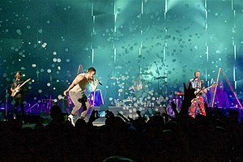

Imagine Dragons is an American rock band formed in 2008 in Las Vegas, known for their fusion of rock, pop, and electronic music. They gained widespread fame with their 2012 hit "Radioactive" from their debut album Night Visions. The band continued their success with albums like Smoke + Mirrors (2015) and Evolve (2017), producing hits such as "Demons" and "Believer." Despite mixed critical reception, Imagine Dragons has become one of the most commercially successful rock bands of the 21st century.
History
Awards
Grammy Awards: They won the 2014 Grammy for Best Rock Performance for their hit "Radioactive"
American Music Awards: The band has won multiple AMAs, including Favorite Pop/Rock Duo or Group and Favorite Pop/Rock Song for "Radioactive."
Billboard Music Awards: Imagine Dragons has won several Billboard Music Awards, including Top Rock Artist and Top Rock Song for "Radioactive."
MTV Video Music Awards: They received a VMA for Best Rock Video for "Believer" in 2018.
Songs
"Radioactive" (2012) Their breakout hit, which became one of the best-selling singles of all time.
"Demons" (2013) A deeply personal song about overcoming inner struggles, widely popular on mainstream charts.
"It's Time" (2012) An early hit that helped the band gain recognition.
"Believer" (2017) A massive anthem about pain and resilience, which became one of their biggest hits.
"Whatever It Takes" (2017) A motivational song about perseverance and pushing boundaries.